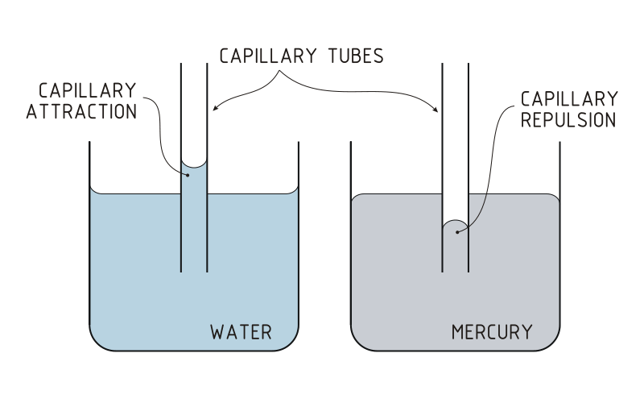

Why Have a Wick?
10SCIE - Fire & Fuels
Finn LeSueur
2019
Learning Outcomes
- To be able to explain the function of a wick
What do you think a wick is for?
Walking Water Demonstration
Capillary Action
- Liquids can flow into narrow spaces, even against the direction of gravity.
- E.g. paper in water, paint brushes sucking up water, a thin tube in water.
- The surface tension and adhesive forces between the liquid and container propel the water into the narrow space.


Wick Practical
- Safety
- Practical read through
- Check understanding each step
- Explain must do Qs 1,2,3 during practical
- Timeframe (20mins)
- Clean up check
Discussion Points
- Why didn’t the solid paraffin wax ignite?
- Did the liquid wax ignite? Why/ why not?
- How does the wick allow the wax to burn? (think about last lesson’s practical)
- Why doesn’t the wick burn? (clue: evaporation and sweating)